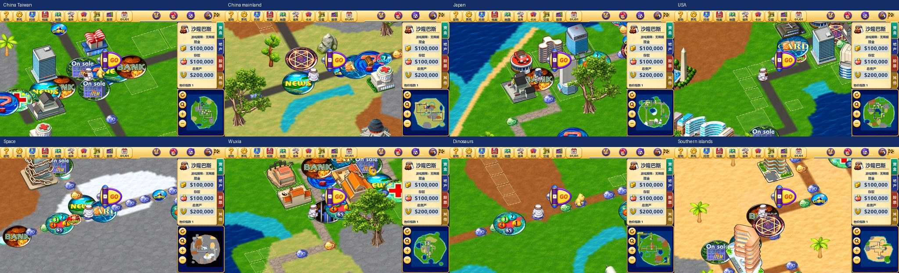

Windows x64
下载 Windows ZIP 或其全部分卷，校验合并并全部解压。进入 Rich4，运行「大富翁4-Re.exe」。原版对照入口和控制台调试入口一并保留。
Windows · 3 个分卷 ↗Windows · Android · Web
八张经典地图与八种主题随机路线，十二位熟悉的角色。保留原版对照入口，提供高清重制画面、单机存档与跨端联机。

完整过场 · 不再提供本期轻量包
下载 Windows ZIP 或其全部分卷，校验合并并全部解压。进入 Rich4，运行「大富翁4-Re.exe」。原版对照入口和控制台调试入口一并保留。
Windows · 3 个分卷 ↗Android 8.0+，完整 APK 包含 21 段独立过场及游戏内动画、音乐和语音。若为分卷，先在电脑合并成 APK，再传到手机安装。
Android · 2 个分卷 ↗先自行部署 Web 服务，再打开部署地址，等待资源准备即可游玩。支持单机及联机。浏览器存档保存在当前站点，更新页面时请勿清除含存档的站点数据。
部署 Web 服务 ↗v0.1.14-preview.20261117 已发布。Windows 完整 ZIP 约 4.31 GB（3 卷），Android ARM64 完整 APK 约 3.31 GB（2 卷）。分卷包请同时下载 release-manifest.json、Merge-Packages.cmd、Merge-Packages.ps1 和 SHA256SUMS.txt；双击 CMD 会逐卷校验并还原完整 ZIP／APK。分卷不能直接安装。查看完整步骤 →
下载同一版本的全部分卷，以及以下 4 个文件，放到同一文件夹后双击 Merge-Packages.cmd。
release-manifest.json · Merge-Packages.cmd · Merge-Packages.ps1 · SHA256SUMS.txt
玩家游玩与管理员启动
Python 平台提供房间管理、TCP 和 WebSocket。独立部署包直接运行 lobby/server.py，原生游戏端口 27654，管理页只监听本机 27655。
平台启动命令 →后端可同时提供已构建的网页与 WebSocket；也可单独启动前端开发服务器。HTTP／WS 共用 Web 端口，与原生 TCP 分开。
后端与前端命令 →自行部署 Web 服务后打开部署地址，选择开始游戏或多人联机；资源按需准备。
查看部署步骤 →大富翁4-Re.exe 启动重制版；大富翁4-Re.cmd 查看控制台；大富翁4.exe 保留原版对照。保留整个解压目录。
手机安装 ARM64 完整 APK，首次启动等待资源准备。x86_64 完整包供对应模拟器本地测试。
昵称、相同口令、切换人物、选择离线预案并准备，最后由房主开始。
联机操作 →同一口令，跨端加入
先自行部署平台。Windows／Android 填服务器IP:27654；浏览器使用自己部署的 Web 地址。
房主平台建房，其他人输入六位口令加入。选择人物及离线预案后准备。空位补 AI，关闭席位不参与。
其他玩家准备后，房主开始。当前玩家操作 GO、道具和卡片；同步期间点击会记录一次。联机不提供存档。
本地建房监听 0.0.0.0，其他设备填写房主实际 IP；不要把 127.0.0.1 发给其他玩家。本版随机地图规则代次为 3，参与者请一同升级。开启随机后可使用八种主题的新路线；人物脚下显示剩余步数，每格减 1。断线恢复与常见问题 →
实际运行画面
八种主题生成各自的海岸、水域、地表区域与景物：宇宙的星空岩地、南岛的沙滩棕榈，以及不同主题的树木、山石和特色景物。地形和景物随本局保存与联机同步；旧随机存档保持原地图，新增景观请新开随机局体验。

设计参考图集
以下保留批准的界面设计图，属于设计参考；当前安装包以实际运行界面为准。
21 张设计参考图，点击图片可放大。
主菜单封面统一使用新版忍太郎：尖角紫色头巾、四角手里剑护额与红围巾。
四个席位、房间聊天与编辑结束自动保存的设计。
PC 展示显示页；手机展示音画页，横竖屏独立排版。
AI 接管、破产清算、外星人暂离。
开始游戏后统一选择八张经典地图与八种主题随机路线。
十二个角色，默认原角色名，游戏时间默认无限期。
只用小头像和图标显示行动顺序；游戏内造型仍需按原版校准。
只用小头像和图标显示行动顺序；游戏内造型仍需按原版校准。